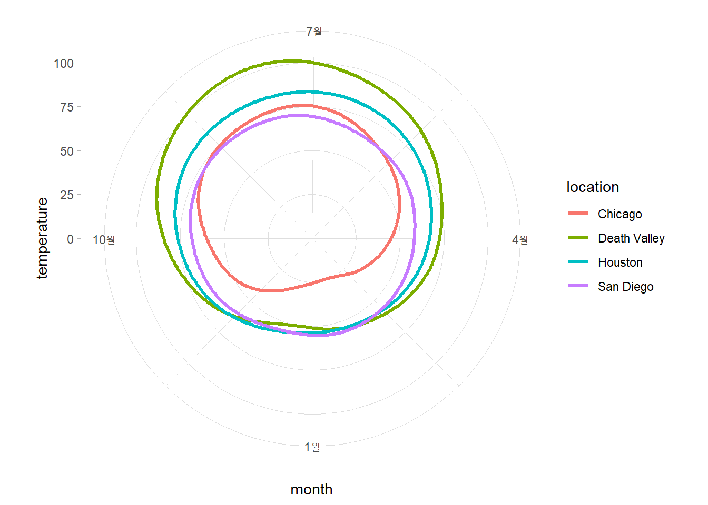
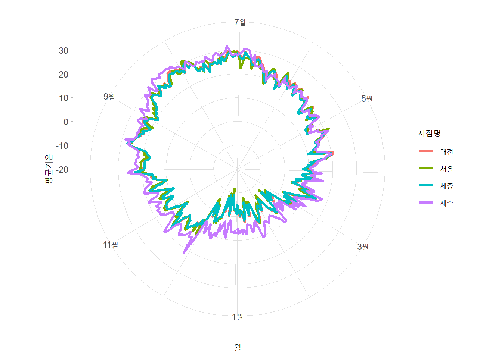

library(ggplot2)
library(dplyr)
#>
#> Attaching package: 'dplyr'
#> The following objects are masked from 'package:stats':
#>
#> filter, lag
#> The following objects are masked from 'package:base':
#>
#> intersect, setdiff, setequal, union|
|
Figure 3.10
1 데이터 시각화 실습 : 원형 그래프 Figure 3.10
1.1 패키지 불러오기
1.2 데이터 불러오기, 파악
- ncdc_normals.csv (날짜별 온도 등 데이터셋)
ncdc_normals <- read.csv('C:/Users/seong taek/Desktop/3-1 DataVisualize/data_visualize/ncdc_normals.csv')
### 차원 파악
ncdc_normals %>% dim()
#> [1] 2745366 6
### 앞부분 훑어보기
ncdc_normals %>% head()
#> station_id month day temperature flag date
#> 1 AQW00061705 1 1 82.4 C 0000-01-01
#> 2 AQW00061705 1 2 82.4 C 0000-01-02
#> 3 AQW00061705 1 3 82.4 C 0000-01-03
#> 4 AQW00061705 1 4 82.4 C 0000-01-04
#> 5 AQW00061705 1 5 82.4 C 0000-01-05
#> 6 AQW00061705 1 6 82.4 C 0000-01-06
### 통계 요약 정보
ncdc_normals %>% summary()
#> station_id month day temperature
#> Length:2745366 Min. : 1.000 Min. : 1.00 Min. :-21.80
#> Class :character 1st Qu.: 4.000 1st Qu.: 8.00 1st Qu.: 39.70
#> Mode :character Median : 7.000 Median :16.00 Median : 54.60
#> Mean : 6.514 Mean :15.76 Mean : 53.17
#> 3rd Qu.:10.000 3rd Qu.:23.00 3rd Qu.: 68.10
#> Max. :12.000 Max. :31.00 Max. :103.20
#> flag date
#> Length:2745366 Length:2745366
#> Class :character Class :character
#> Mode :character Mode :character
#>
#>
#>
### 각 컬럼 클래스(타입) 확인
ncdc_normals %>% sapply(class)
#> station_id month day temperature flag date
#> "character" "integer" "integer" "numeric" "character" "character"
### 각 컬럼 자료형 확인
ncdc_normals %>% sapply(typeof)
#> station_id month day temperature flag date
#> "character" "integer" "integer" "double" "character" "character"1.3 전처리
### staion id와 location 지정 선택한 d.f 만들기
station_loc <- data.frame(station_id = c("USW00014819","USC00042319","USW00093107","USW00012918"),
location = c("Chicago","Death Valley","San Diego","Houston"))
station_loc %>% head()
#> station_id location
#> 1 USW00014819 Chicago
#> 2 USC00042319 Death Valley
#> 3 USW00093107 San Diego
#> 4 USW00012918 Houston### station_id로 ncdc_normals와 station_loc 두 컬럼을 `inner_join`
temps_long <- ncdc_normals %>% inner_join(station_loc, by="station_id")
temps_long %>% head()
#> station_id month day temperature flag date location
#> 1 USC00042319 1 1 51.0 S 0000-01-01 Death Valley
#> 2 USC00042319 1 2 51.2 S 0000-01-02 Death Valley
#> 3 USC00042319 1 3 51.3 S 0000-01-03 Death Valley
#> 4 USC00042319 1 4 51.4 S 0000-01-04 Death Valley
#> 5 USC00042319 1 5 51.6 S 0000-01-05 Death Valley
#> 6 USC00042319 1 6 51.7 S 0000-01-06 Death Valley
temps_long %>% sapply(class)
#> station_id month day temperature flag date
#> "character" "integer" "integer" "numeric" "character" "character"
#> location
#> "character"
### temps_long의 `date`의 타입을 Cha → Date로 변환
temps_long$date <- temps_long$date %>% as.Date('%Y-%m-%d')
temps_long %>% sapply(class)
#> station_id month day temperature flag date
#> "character" "integer" "integer" "numeric" "character" "Date"
#> location
#> "character"1.4 x축 눈금 설정
date_s <- '0000-01-01' %>% as.Date('%Y-%m-%d')
date_e <- '0001-01-01' %>% as.Date('%Y-%m-%d')
break_date <- seq.Date(date_s, date_e, by = '3 month')
date_lab <- format(break_date, '%B')1.5 figure 3.10
- 사용 데이터셋 : temps_long
- x = date, y = temperature
- color : location별
- geom_line
- 선 굵기 : 1.2
- scale_x_date
- 이름 : ‘month’
- 간격 : break_date (3개월)
- 간격 라벨 (1월 ~ 1월)
- scale_y_continuous
- 이름 : ‘temperature’
- 범위 : 0 ~ 105
- coord_polar
- 사용 각도 변수 : x축
- 시작 각도 : 180도
- 반시계 방향
- 테마 : 밝게
- 플롯 영역의 테두리(border) 제거
ggplot(temps_long, aes(x = date, y = temperature, color = location)) +
geom_line(linewidth = 1.2) +
scale_x_date(name='month',
breaks =break_date,
labels= date_lab) +
scale_y_continuous(name = 'temperature',
limits = c(0, 105)) +
coord_polar(theta = 'x',start = pi, direction = -1) + # 6시 위치에서 반시계 방향 (0,1이면 12시 위치에서 시계방향)
theme_light() +
theme(panel.border = element_blank())
2 예제
- 2022년 기상청 자료 Figure 3.10
2.1 데이터 불러오기, 파악
- OBS_ASOS_DD_20230322080932.csv (2022년 기상청 자료)
data_2022 <- read.csv('C:/Users/seong taek/Desktop/3-1 DataVisualize/data_visualize/OBS_ASOS_DD_20230322080932.csv', fileEncoding = 'cp949')
### 차원 파악
data_2022 %>% dim()
#> [1] 2555 6
### 앞부분 훑어보기
data_2022 %>% head()
#> 지점 지점명 일시 평균기온..C. 최저기온..C. 최고기온..C.
#> 1 108 서울 2022-01-01 -4.3 -10.2 2.3
#> 2 108 서울 2022-01-02 -1.3 -5.2 3.0
#> 3 108 서울 2022-01-03 -1.9 -8.0 2.5
#> 4 108 서울 2022-01-04 -2.5 -5.6 1.0
#> 5 108 서울 2022-01-05 -2.8 -7.8 1.9
#> 6 108 서울 2022-01-06 -2.2 -5.9 3.3
### 통계 요약 정보
data_2022 %>% summary()
#> 지점 지점명 일시 평균기온..C.
#> Min. :108.0 Length:2555 Length:2555 Min. :-11.80
#> 1st Qu.:133.0 Class :character Class :character 1st Qu.: 8.20
#> Median :185.0 Mode :character Mode :character Median : 16.40
#> Mean :175.1 Mean : 15.27
#> 3rd Qu.:189.0 3rd Qu.: 23.00
#> Max. :239.0 Max. : 32.20
#> NA's :2
#> 최저기온..C. 최고기온..C.
#> Min. :-13.800 Min. :-8.60
#> 1st Qu.: 4.225 1st Qu.:12.30
#> Median : 12.600 Median :20.75
#> Mean : 11.626 Mean :19.49
#> 3rd Qu.: 19.800 3rd Qu.:27.20
#> Max. : 28.900 Max. :37.50
#> NA's :1 NA's :1
### 컬럼 클래스(타입) 확인
data_2022 %>% sapply(class)
#> 지점 지점명 일시 평균기온..C. 최저기온..C. 최고기온..C.
#> "integer" "character" "character" "numeric" "numeric" "numeric"
### 컬럼 자료형 확인
data_2022 %>% sapply(typeof)
#> 지점 지점명 일시 평균기온..C. 최저기온..C. 최고기온..C.
#> "integer" "character" "character" "double" "double" "double"
### 결측값 있는지 확인
sum(is.na(data_2022))
#> [1] 4
### 결측값 제거
data_2022 <- data_2022 %>% na.omit()2.2 전처리
### `일시`를 character → date형식으로 변환
data_2022$일시 <- data_2022$일시 %>% as.Date('%Y-%m-%d')
data_2022 %>% sapply(class)
#> 지점 지점명 일시 평균기온..C. 최저기온..C. 최고기온..C.
#> "integer" "character" "Date" "numeric" "numeric" "numeric"
### 대전, 서울, 세종, 제주 지역만 추출
data_2022 <- data_2022 %>% filter(data_2022$지점명 %in% c('대전','서울','세종','제주'))
data_2022$지점명 %>% unique()
#> [1] "서울" "대전" "제주" "세종"2.3 x축에 표시할 눈금
data_2022$일시 %>% head()
#> [1] "2022-01-01" "2022-01-02" "2022-01-03" "2022-01-04" "2022-01-05"
#> [6] "2022-01-06"
data_2022$일시 %>% tail()
#> [1] "2022-12-26" "2022-12-27" "2022-12-28" "2022-12-29" "2022-12-30"
#> [6] "2022-12-31"
date_s <- '2022-01-01' %>% as.Date('%Y-%m-%d')
date_e <- '2023-01-01' %>% as.Date('%Y-%m-%d')
break_date <- seq.Date(date_s, date_e, by='2 month')
break_date
#> [1] "2022-01-01" "2022-03-01" "2022-05-01" "2022-07-01" "2022-09-01"
#> [6] "2022-11-01" "2023-01-01"
# 월만 문자 값으로 뽑아내기
date_lab <- format(break_date, '%B')
date_lab
#> [1] "1월" "3월" "5월" "7월" "9월" "11월" "1월"2.4 figure 3.10
- 사용 데이터셋 : data_2022
- x=일시, y=평균기온..C.
- color : 지점명별
- geom_line
- 선 굵기 : 1.2
- scale_x_date
- 이름 : ‘월’
- 간격 : break_date (2개월)
- 간격 라벨 (1월 ~ 1월)
- scale_y_continuous
- 이름 : ‘평균기온’
- 범위 : -20 ~ 35
- coord_polar
- 사용 각도 변수 : x축
- 시작 각도 : 180도
- 반시계 방향
- 테마 : 밝게
- 플롯 영역의 테두리(border) 제거
ggplot(data_2022, aes(x=일시, y=평균기온..C., color=지점명)) +
geom_line(linewidth = 1.2) +
scale_x_date(name='월',
breaks =break_date,
labels= date_lab) +
scale_y_continuous(name = '평균기온',
limits = c(-20, 35)) +
coord_polar(theta = 'x',start = pi, direction = -1) + # 6시 위치에서 반시계 방향 0,1이면 12시 위치에서 시계방향
theme_light() +
theme(panel.border = element_blank())